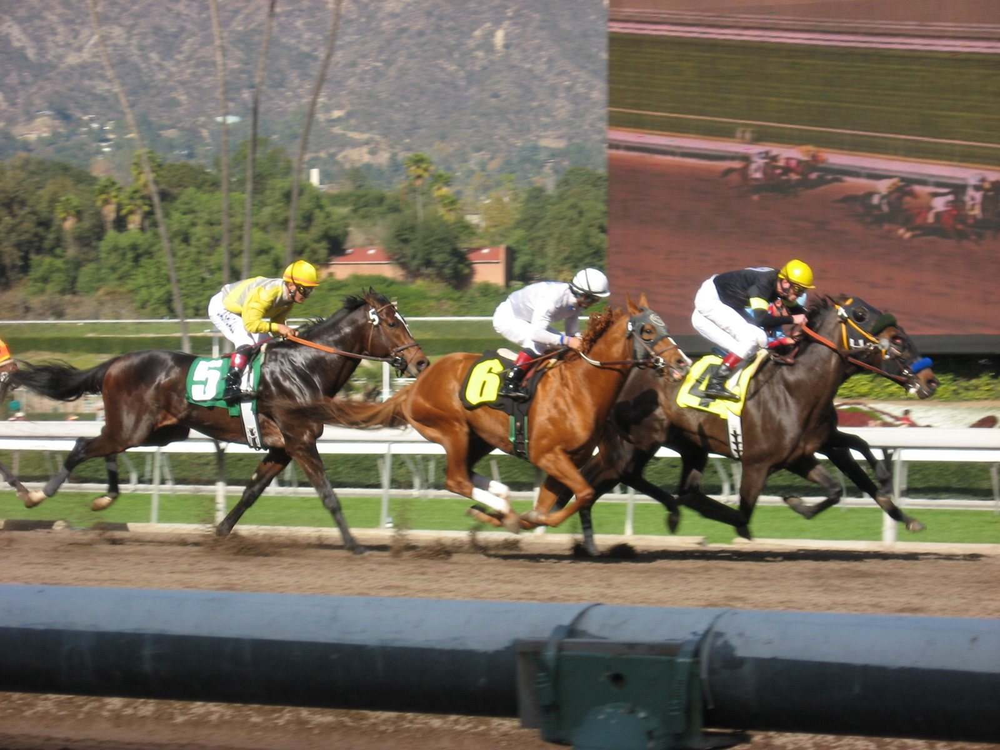

Un cuello y a 24-1: Dr. Kapur sorprende en el Perryville Stakes de Keeneland
Dr. Kapur, pagado a 24-1, se impuso por un cuello en el Perryville Stakes (GIII) de Keeneland, sobre siete furlongs para tresañeros, tras remontar desde el fondo del pelotón con Tyler Gaffalione.

La carrera se rompió desde el partidor. Roscoe's Brother tomó la cabeza y marcó parciales de 22,11 s, 44,59 s en la media milla y 1:10,27 en los seis furlongs. A su estela intentó acercarse Deep Flame, favorito a 4-5, mientras Dr. Kapur esperaba entre los últimos.
En la recta, Roscoe's Brother se vino abajo. Chief Wallabee fue el primero en rebasarlo y llegó a despegarse, pero por el centro de la pista aparecieron Dr. Kapur y Obliteration. Los tres cruzaron la meta juntos y hubo que recurrir al fotofinish. Dr. Kapur ganó por un cuello; Chief Wallabee, de William Mott, conservó el segundo puesto por un hocico ante Obliteration, de Steven Asmussen. El crono final fue de 1:24,25 sobre pista rápida. Deep Flame no apareció en la llegada.
El nombre del ganador tiene historia. Ken Ramsey, propietario y criador junto a Sarah Ramsey, recibió un trasplante de riñón en junio de 2024, a los 88 años y 230 días, y el cirujano que lo operó fue el doctor Sandip Kapur. "Con toda esa velocidad delante, nuestra única opción era que se fundieran", explicó Ramsey, que reservó un elogio para el jockey: "Tyler siguió las instrucciones a la perfección. Siete furlongs es lo que necesita".
Preparado por Saffie Joseph Jr., el hijo de McKinzie y Ava's Kitten, por Kitten's Joy, logra su primera victoria en una prueba graduada y se convierte en el sexto ganador de ese nivel para su padre. Este año corre desde atrás. Antes de esta prueba había sido segundo en el Gallant Bob (GII) de Parx, por detrás de Stradale. De la carrera de 350.000 dólares se llevó 203.438 y suma tres victorias en ocho salidas.
"El caballo estuvo muy dispuesto. No dudó en ningún momento y terminó de maravilla", resumió Gaffalione. En el otro lado, Brad Cox no encontró explicación para la carrera de Deep Flame: "Es un misterio. Tenía buen aspecto, calentó bien, pero no respondió en la recta como necesitábamos".
Por Martín Larrañeta